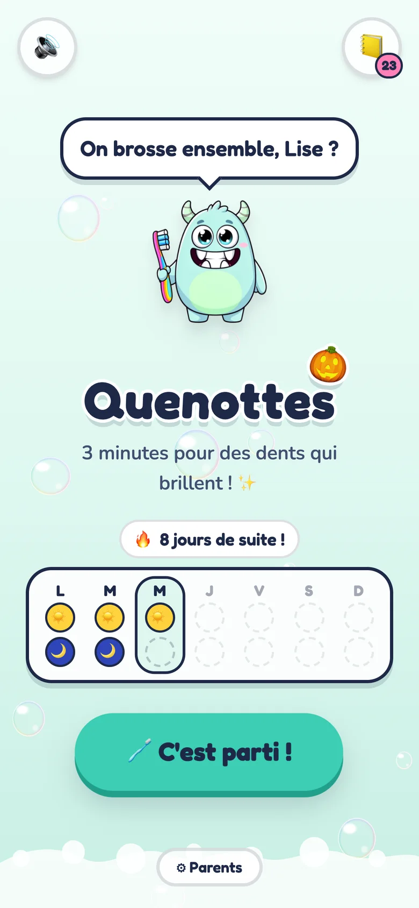
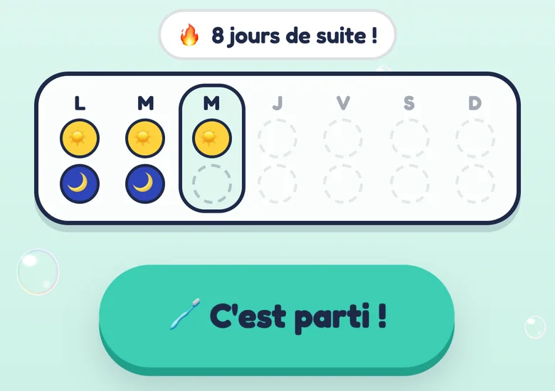
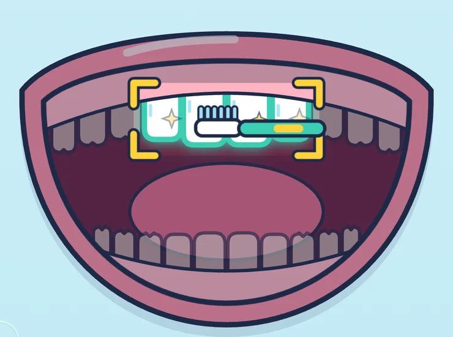
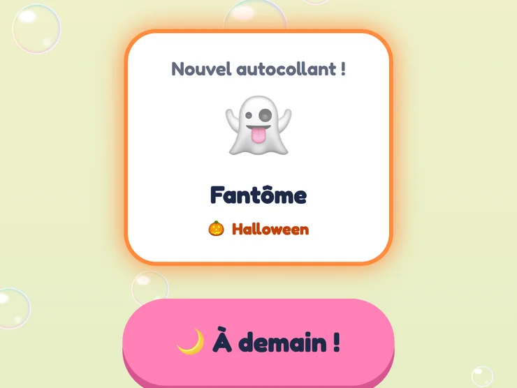

Des visuels animés
Les dents à brosser sont mises en lumière. Elles passent de mates à brillantes quand la brosse y passe.
Quenottes, un petit monstre menthe à la brosse arc-en-ciel, guide votre enfant pendant 3 minutes : il montre quelles dents brosser, le dit à voix haute et fait briller chaque dent au passage.
Sans compte, sans publicité. iPhone et Android.

Comment ça marche

Votre enfant choisit son profil, puis un seul bouton lance la séance. Pas de menu, pas d'attente.

Devant, derrière, fond à gauche, fond à droite : en haut, puis en bas. La bouche animée éclaire les dents à brosser, Quenottes le dit à voix haute.

Un autocollant surprise rejoint l'album, le calendrier se colore, et l'app renvoie au prochain brossage (« À ce soir ! » le matin, « À demain ! » le soir), pas à plus d'écran.
Ce qu'il y a dedans
Les dents à brosser sont mises en lumière. Elles passent de mates à brillantes quand la brosse y passe.
Chaque consigne est lue à voix haute, et un compte à rebours 3-2-1 annonce chaque changement.
Un le matin, un le soir, dans un album à compléter. Et en ce moment, un thème spécial Halloween !
Chacun son profil, son calendrier et son album. On peut se brosser les dents ensemble : chacun gagne son autocollant.
Pensé pour les tout-petits
De 3 à 8 ans, tout passe d'abord par l'image et le son. Le texte reste là pour vous.
Vie privée
Un profil, c'est un prénom et un avatar animal. Rien d'autre, et rien n'est envoyé nulle part.
Aucune inscription requise.
Pas de serveur, pas de cookie, aucune statistique envoyée.
Ni pub, ni monnaie virtuelle : les autocollants se gagnent en se brossant les dents.
Synchronisez les enfants et les albums de vignettes par QR code, hors ligne.
Récupérer l'app
Elle s'installe depuis le navigateur et fonctionne hors ligne après la première visite.
L'application est disponible sur GitHub (fichier APK), à installer à la main. L'application arrivera bientôt sur le Google Play Store.